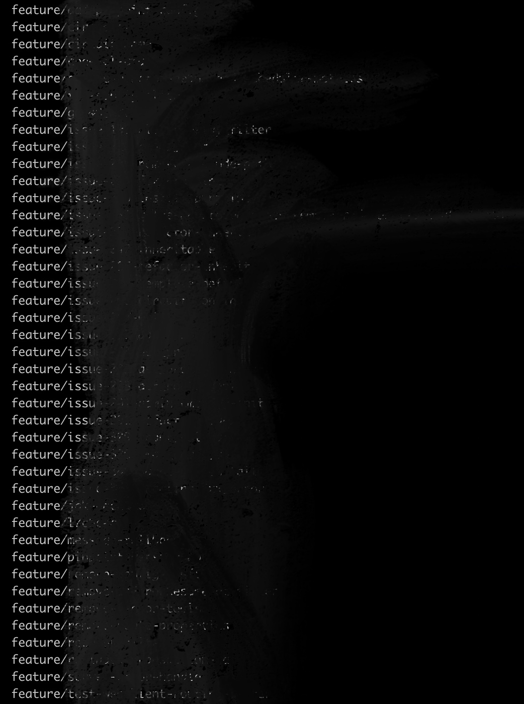

Make git-branchcut with Go lang
https://github.com/dlsrb6342/git-branchcut
업무/개인프로젝트/오픈소스 등에서 git을 사용하다 보니 나도 모르는새에 프로젝트마다 브랜치가 엄청 쌓여있었다. 이것들을 한번에 싹 지워버리고 싶었는데 내가 원하는 옵션으로 없앨 수 있는 방법을 찾지 못해 직접 만들었다.

Git Add-On
git addon으로 만들어서 git [name] [option] 이런식으로 사용하고 싶었다. 하지만 어떻게 만들고 어떻게 배포해야 할지 막막했기에 awesome-git-addons에서 다른 프로젝트들을 많이 참고했다.
무언가 필요할때
awesome을 붙여 검색하면 친절히 정리해둔 repository가 많이 있다. :)
Go lang
참고했던 프로젝트들은 python, shell script, js, go 등 다양한 언어로 작성되어있었다.
이중에 난 예전부터 관심있었던 Go lang을 선택했다 (https://youtu.be/LJvEIjRBSDA 이걸 보고 관심이 생겼다).
지금 생각해보면 여러 언어 중에 Go lang을 선택한건 굉장히 좋은 선택이었다. 다른 언어들에 대해 많이 알아보지는 않았지만 cobra와 goreleaser는 내겐 혁명이었다.
Cobra
Cobra는 Go lang의 CLI Framework이다. Subcommand / Flag 등 정말 간단한 작업으로 내가 만들었나 싶을정도로 Modern한 CLI를 만들어준다.
Kubernetes, Helm, Github CLI 등 굉장히 다양한 프로젝트에서 Cobra 를 사용 중이다.
- Subcommand의 Subcommand, 즉 Nested Subcommand도 지원한다.
- Global / Local / Cascading 등 Flag의 Scope을 지원한다.
- 내가 command/flag마다 설명을 넣어둔다면 help를 자동생성해준다.
예시 코드는 git-branchcut을 봐도 되고 공식 홈페이지 설명이 자세히 되어있다.
내가 해본 CLI App들은 학부생 때 열심히 손으로 직접 만든 C언어 프로그램 밖에 없어서 그런지, Cobra를 써보고 많이 놀랐다. 물론 내가 Cobra를 깊게 사용해보진 않았지만 굉장히 강력한 프레임워크으로 보인다.
만약 Go로 CLI를 만든다고 한다면 사용하지 않을 이유가 없는 것 같다.
Goreleaser
Goreleaser는 Go lang project의 release automation 툴이다. 모든 설정은 .goreleaser.yml에 저장된다.
설치나 실행방법, 피쳐들은 너무 내용이 많아 다 설명할 수 없으니 Goreleaser 공식 홈페이지를 참고하면 될 것 같다.
Cobra를 처음 썼을 때와 비슷한 느낌을 받았다. 너무 편하고 쉽다. 처음 git-branchcut을 만들 때 만들기는 하는데 다른 사람들이 사용할 수 있게 어떻게 배포할까 라는 고민을 많이 했다.
그 고민들이 무색하게 Goreleaser는 config 몇줄 수정/추가하고 goreleaser만 입력해주면 Release Note, Executable files, Homebrew-tap recipe를 모두 만들어준다. git-branchcut을 사용하고 싶어하는 사람들이 이젠 쉽게 Executable files를 받을 수 있고 혹은 Homebrew를 통해서 설치할 수 있게 된 것이다.
git-branchcut
이제 내가 만든 git branchcut에 대해서 설명하려고 한다. 내가 원하는 기능은 딱 2가지였다.
- Outdated branch, 즉 새로운 커밋이 생긴지 오래된 브랜치 삭제.
- Pattern, Branch 이름의 pattern으로 삭제.
그래서 git branchcut은 일단 두가지 옵션을 제공한다. 지극히 내 요구사항에 의해 만들었으니..ㅎㅎ1
2
3
4
5
6
7
8
9
10
11
12
13
14
15
16> git branchcut execute --help
Cut branches
Usage:
branchcut execute [flags]
Flags:
-o, --day-offset int Day offset. Branches that is committed before day offset would be deleted
--dry-run Only print branch list that would be delete, without deleting it.
--force Allow deleting the branch irrespective of its merged status.
-h, --help help for execute
-m, --main-branch string Default branch name (default "main")
-p, --pattern string Pattern for branch name
Global Flags:
-g, --executable-git-path string The git executable to use (default "git")--day-offset으로 며칠 전 커밋된 브랜치를 살릴지 정할 수 있다. 예를 들어 --day-offset 7로 했다면 마지막 커밋이 7일 이내에 있는 브랜치만 살아남는다.--pattern으로 브랜치 이름의 Pattern을 지정할 수 있다. --pattern "feature/*"로 설정하면 “feature/“로 시작하는 브랜치들은 삭제된다.
두가지 옵션 모두 입력하였다면 두 조건을 모두 만족하는 브랜치만 삭제된다.
이 프로젝트를 하면서 Go lang을 처음 사용하였는데 책을 보면서 공부하거나 심도있게 사용한 것은 아니어도 어렵지 않은 언어라는 느낌을 받았다. 나중에 만약 언어의 선택이 자유롭고 새로운 것을 도전하고 싶다면 Go lang을 선택할 것 같다.
이로써 내 로컬 git project들의 브랜치들은 깨끗하게 정리되었다!